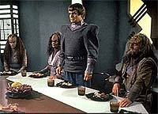
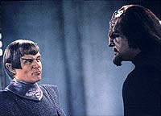
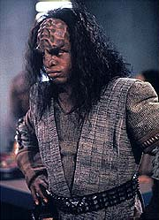
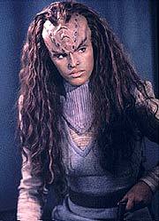
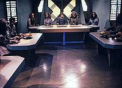

|
MANCHETE
DO EPISDIO
Worf tem
45 minutos s para ele, mas
no consegue aproveitar a oportunidade
Episdio
anterior | Prximo
episdio
Sinopse:
Data Estelar: 46579.2.
 Ainda
preso no campo de concentrao Romulano habitado por Klingons e
tendo descoberto que seu pai est realmente morto, Worf pergunta a
L'Kor e Gi'ral, os Klingons que lideram o grupo, como eles conseguem
viver pacificamente como prisioneiros --a maior desgraa que pode
acontecer a um guerreiro ser capturado por seu inimigo.
Eles explicam que, depois que foram capturados, durante o massacre
de Khitomer, os Romulanos os impediram de cometer suicdio. Algum
tempo depois, os captores viram que seus prisioneiros de nada valiam
e decidiram libert-los. Entretanto, para no desonrar suas famlias,
os Klingons optaram por permanecer isolados, alimentando em seus
entes queridos a idia de que eles haviam morrido heroicamente em
batalha.
Mais tarde, Worf encontra Tokath, o lder Romulano, e incapaz de
entender por que ele forneceu esse lar pacfico para seus inimigos
jurados, os Klingons. Worf descobre que no apenas os Romulanos
vivem com os Klingon em harmonia ali, mas que Tokath chegou a se
casar com uma mulher Klingon. O Romulano no est disposto a
permitir que as idias de Worf estraguem o ambiente pacfico que
eles construram ali e pede que o Klingon no teste sua tolerncia.
 Recusando-se
a aceitar o modo de vida daquelas pessoas, Worf tenta fugir do
complexo, mas impedido. Ele fica mais surpreso ainda ao descobrir
que quem o impediu de fugir foi Toq --um Klingon! Tokath decide ento
injetar em Worf um transponder que permita que eles monitorem sua
posio o tempo todo e designa Toq para vigi-lo.
Frustrado, Worf controla sua tenso ao executar um exerccio
antigo de arte marcial Klingon, atraindo a ateno de Toq, Ba'el e
dos demais representantes da gerao mais nova de Klingons daquele
pequeno povoado.
Worf v a oportunidade de despertar nos Klingons um interesse por
sua herana e cultura, algo que seus pais lhes haviam negado. Ele
assume o papel de professor, contando as lendas e costumes com os
quais cresceu. COnforme ele o faz, a atrao fsica para com Ba'el
fica mais forte. A me dela, Gi'ral, logo percebe e tenta
desencorajar o relacionamento. Entretanto, justo quando ambos esto
se entregando ao que sentiam, Worf v que ela tem orelhas pontudas
--ela meio-Romulana. Isso faz com que Worf a rejeite, causando
mal-estar entre os dois.
Enquanto isso, ele segue ensinando as tradies Klingons. Ele
convida Toq para uma caada. Aps alguma argumentao, ele
convence as autoridades a permitir que os dois saiam brevemente do
complexo. Durante o jantar, Ba'el tambm ecoa os efeitos das idias
de Worf, ao perguntar a Tokath se ele autorizaria que ela deixasse o
planeta, caso desejasse.
A tenso est no auge quando Toq entra na sala, carregando em
triunfo um animal que ele matou durante a caada. Ele agora parece
um legtimo guerreiro Klingon e evoca todos a cantarem com ele uma
velha cano de batalha. Enquanto todos os Klingons cantam, Tokath
puro descontentamento. Ao que parece, Worf j
"contaminou" os Klingons do complexo.
 Tokath
volta a confrontar Worf, argumentando que a perda das razes um
preo pequeno a se pagar pela paz. Mas Worf discorda, e o Romulano
d a ele um ultimato. Ou ele aceita a vida naquela sociedade pacfica,
ou ser condenado morte. Obviamente, Worf escolhe a segunda opo.
Ba'el oferece a ele ajuda para fugir, mas Worf se recusa,
determinado a enfrentar seu destino com honra.
Quando a execuo est para acontecer, Toq se posta entre Worf e
os executores Romulanos. Ele diz que se Worf vai morrer, ele tambm
o far. Um por um, os demais Klingons tomam seu lugar frente de
Worf e Toq. Quando a prpria filha de Tokath, Ba'el, se junta ao
grupo, Gi'ral convence o Romulano a desistir da execuo.
Worf promete nunca revelar a localizao daquele complexo e levar
com ele de volta Enterprise todos os Klingons que queiram deixar
aquele lugar. Ba'el, sabendo que no seria aceita entre os Klingons
por seu sangue Romulano, permanece no planeta com seus pais.
Ao voltar Enterprise, Worf no revela a Picard a existncia do
campo, mas diz que os Klingons foram resgatados aps um acidente
com uma nave. O capito entende que no verdade, mas aceita
manter o segredo de Worf.
Comentrios:
Se a primeira
parte de "Birthright" s era especial em razo da
subtrama envolvendo Data e sua nova capacidade de sonhar, na restou
para alimentar a concluso do episdio duplo. No h qualquer
meno aos eventos relacionados ao andride, nos deixando com a
estranha sensao de que aquela histria no tinha nada que
estar alinhada com a trama de Worf no acampamento Klingon/Romulano.
O ponto fraco do episdio de abertura era justamente a trama de
Worf. Ela perde totalmente o sentido a partir do momento em que o
Klingon descobre que seu pai est mesmo morto, iniciando uma nova
histria para a segunda parte. Essa descontinuidade entre as duas
partes nem surpreendente, levando em conta que dois escritores
diferentes engendraram cada um dos episdios (Brannon Braga cuidou
da primeira parte, e Ren Echevarria da segunda). Mas
extremamente negativa.
 Ademais,
a prpria narrativa envolvendo Worf e seus colegas Klingons bem
sonolenta. A discusso de princpios que envolve o episdio at
interessante, mas fica ofuscada pelo fato de que o Klingon no
teria outra opo: independentemente do que ele pensava a respeito
da "soluo" de Tokath para estabelecer a convivncia
pacfica entre Klingons e Romulanos, ele precisaria provocar os
Klingons para que eles procurassem suas razes, para que ele mesmo
pudesse escapar dali.
A contraposio de origens e sua perda em nome da paz poderia
alimentar um debate interessante, mas acaba perdida na viso imutvel
de Worf. O Klingon em nenhum momento pra e pensa sobre o que
Tokath conseguiu promover e sobre a possibilidade de isso ser de
fato positivo. Perde-se uma chance de desenvolver um pouco mais o
personagem, fazendo-o reagir sensivelmente quela situao.
O mais perto que chegamos disso quando Worf leva um tapa na cara
de seu prprio preconceito, ao descobrir que Ba'el
meio-Romulana. Mas at isso acaba perdido em um roteiro que aposta
totalmente na inflexibilidade e teimosia do Klingon da Enterprise.
Em outros segmentos, como em "The Enemy", esse
valor moral diferenciado de Worf jogou tremendamente a favor de seu
personagem. Mas aqui, dado que estvamos falando s de Klingons,
faltou um pouco de trabalho.
No que Worf devesse realmente mudar de opinio e apoiar a
iniciativa de Tokath. Mas ele deveria ao menos mostrar alguma hesitao,
alguma dvida sobre se ele estava fazendo o certo ou o errado. Com
a ausncia de dilema moral na cabea de Worf, vo-se todas as
chances de estabelecer um bom drama para a histria.
Para completar a desgraa, o enredo por demais vagaroso, e
depende muito do prprio Worf para sobreviver. Deve ter sido a glria
(e ao mesmo tempo o esgotamento) para Michael Dorn --ele aparece em
pelo menos 90% das cenas do episdio. Sem dvida, um tour de
force. Mas infelizmente o roteiro no conseguiu traduzir em evoluo
para o personagem todo o tempo de tela que foi dado a ele.
Estando o problema na concepo original da histria e em seu
roteiro, no havia nada que os atores convidados pudessem fazer
para ajudar, embora todos eles tenham feito um bom trabalho em seus
respectivos papis. No fundo, o episdio todo um enorme
marasmo. No h muitas cenas ou momentos memorveis para os
personagens (ou para a audincia). Talvez a melhor cena seja a dos
Klingons cantando, aps Toq voltar da caada.
 Tecnicamente,
o episdio at bom, com o trabalho de cenografia qualificado
para o complexo Romulano/Klingon (embora aparentando ser pequeno
demais para abrigar todos os seus moradores), os belos aparatos
Klingons enferrujados e o trabalho discreto e competente do diretor
Dan Curry.
Alis, discrio seria um bom modo de definir "Birthright"
--um segmento totalmente esquecvel, com srios problemas de
estruturao narrativa e uma grande oportunidade perdida de dar
mais substncia ao personagem de Worf, to maltratado nas
primeiras temporadas da srie.
Citaes:
Worf - "A place can be safe
and still be a prison."
("Um lugar pode ser seguro e ainda ser uma priso.")
Worf - "A Klingon does not run away from his battles."
("Um Klingon no foge de suas batalhas.")
Trivia:
 Este episdio foi o primeiro e nico da srie dirigido por Dan
Curry, o supervisor de efeitos especiais da Nova Gerao.
"Fiquei muito feliz pela escolha de Dan, pois sempre gostei
muito dele", diz Michael Dorn, o Worf. " uma pessoa
muito interessante e paciente", completa.
Este episdio foi o primeiro e nico da srie dirigido por Dan
Curry, o supervisor de efeitos especiais da Nova Gerao.
"Fiquei muito feliz pela escolha de Dan, pois sempre gostei
muito dele", diz Michael Dorn, o Worf. " uma pessoa
muito interessante e paciente", completa.
No
udio original, em ingls, possvel ouvir um erro de Patrick
Stewart ao gravar o dirio do capito. Ele diz que a data estelar
46759.2 ao invs da correta, 46579.2. A data estelar 46759.2
estaria entre os episdios 146 e 147. "Birthright, Part
II" o episdio 143.
Um
mapa estelar que aparece durante o episdio mostra que uma das
estrelas do setor em que est a Enterprise tem o nome de
"Echevarria", que o sobrenome do autor do episdio,
Ren Echevarria.
Ficha
tcnica:
Escrito por Ren Echevarria
Direo de Dan Curry
Exibido em 01/03/1993
Produo: 143
Elenco:
Patrick Stewart como
Jean-Luc Picard
Jonathan Frakes como William Thomas Riker
Brent Spiner como Data
LeVar Burton como Geordi La Forge
Michael Dorn como Worf
Gates McFadden como Beverly Crusher
Marina Sirtis como Deanna Troi
Elenco convidado:
Sterling Macer, Jr.
como Toq
James Cromwell como Jaglom Shrek
Jennifer Gatti como Ba'el
Cristine Rose como Gi'ral
Alan Scarfe como Tokath
Richard Herd como L'kor
Episdio
anterior | Prximo
episdio
|